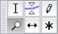

Zooming
From Audacity Manual
If you want to carefully inspect a small portion of your audio you will want to use one of these Zoom methods.
The figure above shows Audacity's view of an entire song, zoomed all the way out. It's really useful to get an idea of the whole piece from start to finish, but it's hard to see much detail - like a forest with no individual trees.
Zooming the time scale, or zooming "horizontally", is something you'll do all the time. It lets you focus on the first 15 seconds, for example:

or the last 15 seconds:
or even a tiny fraction of a second, where you can see the individual audio samples as small dots:
Occasionally you may want to zoom "vertically", so that you see only a portion of the waveform from top to bottom, but in greater detail:
Time Scale Zooming (Horizontally)
There are five ways to zoom horizontally:
View Menu
Use the zoom commands at the top of the View Menu:
- : Doubles the current zoom level.
- : Reverts back to Audacity's default zoom, where you can see 5 - 10 seconds at a time.
- : Cuts the current zoom level in half.
- : Zooms out just enough so that you can see the entire project.
- : This doesn't actually zoom, but resizes all the tracks so they fit in the window vertically without scrolling. If you have more than about ten tracks, some scrolling up and down will still be needed, because there is a minimum track height beyond which reduction is impossible.
- : If you have audio selected, this zooms and scrolls so that the selection just fits in the window.
Edit Toolbar
Four of the view commands have equivalent buttons on the right of the Edit Toolbar:
- Zoom In
-
 Zoom Out
Zoom Out
- Zoom to Selection
-
 Fit In Window
Fit In Window
Keyboard shortcuts
All six zoom commands have keyboard shortcut equivalents:
| Zoom action | Keyboard shortcut |
|---|---|
| Zoom In | CTRL + 1 |
| Zoom Normal | CTRL + 2 |
| Zoom Out | CTRL + 3 |
| Fit in Window | CTRL + F |
| Fit Vertically | CTRL + SHIFT +F |
| Zoom to Selection | CTRL + E |
Mac users: Use Command instead of CTRL.
Zoom Tool
You can get very precise control over zooming using the Zoom Tool in the Tools Toolbar:
- 
To zoom in, position the mouse pointer over a track and left-click. To zoom out, shift-click or click the right mouse button. The mouse pointer position will remain at the click point, while the length of time visible on the Timeline diminishes or expands on either side to respect the change in zoom level.
You can zoom in on a specific region by clicking and dragging. Position the mouse at the left edge of the region you require, click and hold the mouse button, then drag the mouse in either direction:
When you release the mouse button, Audacity will zoom in to that region so that it now fits the window:
Zoom In or Out on the Mouse Pointer using the Scroll Wheel
If your mouse has a scroll wheel or ball, you can zoom in or out centered on the position of the mouse pointer, instead of centered on the selection or editing cursor. Hold down the CONTROL key on your keyboard then scroll up to zoom in, or scroll down to zoom out. For example. you can zoom in at or near the start or end of a selection by placing the pointer there.
To zoom the waveform in Audacity without using the CONTROL key, disable "Zoom using scroll ball while holding Command" (or similar) in the System "Mouse" Preferences. If you can't find this option in the Mouse Preferences, look in the System "Universal Access" Preferences, the "Seeing" tab, then in the "Zoom" section click the "Options" button - uncheck "Use scroll wheel with modifier keys to zoom".
Vertical zooming
Vertical zooming can be useful on occasions. No tool is required. Hover the mouse over the vertical ruler of a track, and the pointer changes to a magnifying glass, indicating you can zoom vertically:
- Left-click once to zoom in at the position on the vertical scale you are interested in. This point will then be centered on the vertical scale.
- Hold Shift then left-click (or just right-click) to zoom out incrementally.
- Hold Shift then right-click to zoom out immediately to normal zoom level.
- Ctrl + Shift with left-click can also be used to zoom out to normal on Mac.
Alternatively, click once and hold down the mouse button, then drag to select a vertical region:
When you release the mouse button, exactly the range you selected will be zoomed in so as to fit vertically inside the track height:

In default Waveform view set in the Track Dropdown Menu you can zoom in to a minimum display range of 0.001 linear extending from top to bottom of the scale.